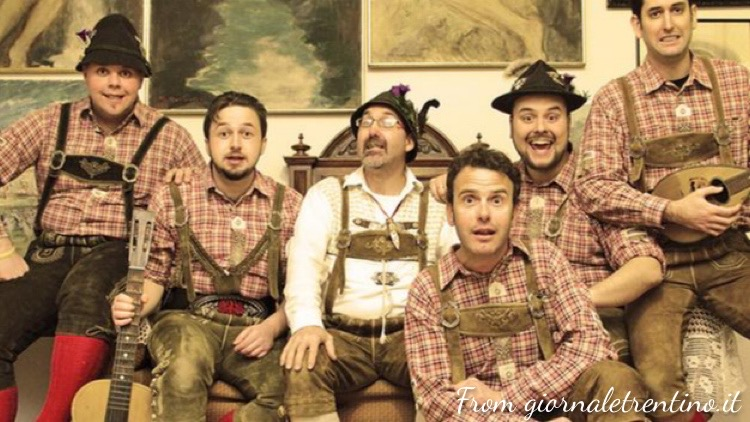

Musica trentina -> Band della Valsugana
The Bastard Sons of Dioniso
Fondato nel 2003, il gruppo dei Bastard Sons of Dioniso è uno dei più conosciuti in Trentino. Dopo l'approdo ad X-factor nel 2009, dove la band si è classificata al secondo posto, è iniziata la loro carriera. Hanno pubblicato diversi dischi; il loro genere è il rock.
Video
Social e contatti
Spotify

Glockenthurm
I Glockenthurm nascono nel 2007 e sono un gruppo folk molto famoso della zona. Dopo la pubblicazione di tre dischi si sono esibiti in varie parti del Trentino e anche all'estero. Il gruppo canta principalemente in dialetto trentino ma si sbilancia anche verso il rock e il tirolese.
Video
Social e contatti
Musica trentina -> Cori della Valsugana
Coro Genzianella
Nato nel 1966, il Coro Genzianella di Roncogno è tra i più famosi della zona. L'organo interpreta principalmente canti di montagna e della tradizione popolare trentina.
Video
Social e contatti
Sito web ufficiale

Coro Valsella
Il coro Valsella è stato fondato nel 1936 a Borgo Valsugana ed è uno dei più antichi del trentino. Il repertorio varia da canti tradizionali trentini a canti popolari europei. L'organo ha suonato anche alla Casa Bianca e in Vaticano.
Video
Social e contatti
Sito web ufficiale
Coro Lagorai
Nato a Torcegno nel 1982, il coro Lagorai vanta una storia di recupero di tradizioni passate. Nel repertorio sono presenti canti liturgici e gregoriani oltre che ai classici canti popolari trentini.
Video
Social e contatti